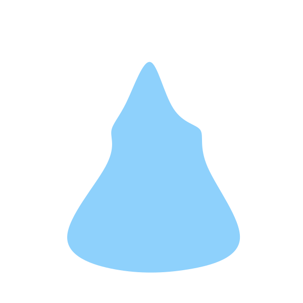
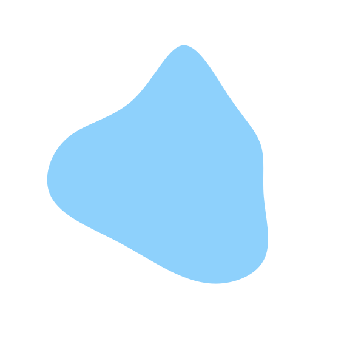

format_paint
Components
more_vert
01

Typography
The Material Design type scale includes a range of contrasting styles that support the needs of your product and its content.
Body text comes in ranges 1-2, and it’s typically used for long-form writing as it works well for small text sizes. For longer sections of text, a serif or sans serif typeface is recommended.
This example type scale on the right uses the Roboto typeface for all headlines, subtitles, body, and captions, creating a cohesive typography experience. Hierarchy is communicated through differences in font weight (Light, Medium, Regular), size, letter spacing, and case.
description
arrow_forward

02
Colours
The Material Design color system helps you apply color to your UI in a meaningful way. In this system, you select an accent colour to present your brand. Most components have light and accented variants with dark being still in progress.
description
arrow_forward

03

Cards
Cards are surfaces that display content and actions on a single topic.
They should be easy to scan for relevant and actionable information. Elements, like text and images, should be placed on them in a way that clearly indicates hierarchy.
description
arrow_forward

04
Topbars & Overflow Menus
The top app bar provides content and actions related to the current screen. It’s used for branding, screen titles, navigation, and actions.
It can transform into a contextual action bar. Menus display a list of choices on temporary surfaces.
description
arrow_forward

05
Media
Media Image lists represent a collection of items in a repeated pattern. They help improve the visual comprehension of the content they hold.
description
arrow_forward

06
Buttons
Buttons communicate actions that users can take. They are typically placed throughout your UI, in places like:
- Dialogs
- Modal windows
- Forms
- Cards
- Toolbars
description
arrow_forward

07
Tabs
Tabs organize and allow navigation between groups of content that are related and at the same level of hierarchy.
Each tab should contain content that is distinct from other tabs in a set. For example, tabs can present different sections of news, different genres of music, or different themes of documents.
description
arrow_forward

08
Sidenavs, Modals & Accordions
Navigation drawers provide access to destinations and app functionality, such as switching accounts.
A dialog is a type of modal window that appears in front of app content to provide critical information or ask for a decision. Dialogs disable all app functionality when they appear, and remain on screen until confirmed, dismissed, or a required action has been taken.
description
arrow_forward